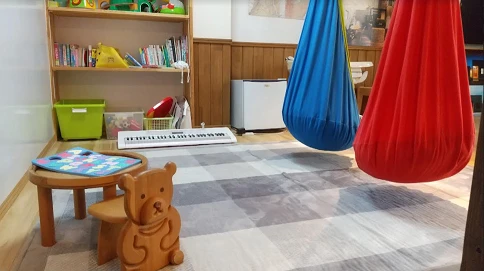
お子様連れの方もお気軽に☆家づくり無料相談会
こんにちは。富山で自然素材にこだわるホンモノの家、フジ創アイノスです。 家を建てたいと思ったものの、何からしたらいいかわからない、とお悩みではありませんか？ 家づくりは、一生で最大の買い物なのに、わからないことや不安だら
続きを読む →FUJISOU AINOS JOURNAL
家づくりのこと、暮らしのこと。
日々の想いを、お伝えします。
家づくりについて 556件 ／ 新しい記事から 4・24ページ

こんにちは。富山で自然素材にこだわるホンモノの家、フジ創アイノスです。 家を建てたいと思ったものの、何からしたらいいかわからない、とお悩みではありませんか？ 家づくりは、一生で最大の買い物なのに、わからないことや不安だら
続きを読む →
こんにちは。富山で自然素材にこだわるホンモノの家、フジ創アイノスです。 日当たりが悪そうな土地は、とても不人気であるため、ずいぶん割安で購入することが出来ます。 また不動産屋さん側からすると、売れにくそうな土地ほど早く処
続きを読む →こんにちは。富山で自然素材にこだわるホンモノの家、フジ創アイノスです。 資金計画の結果、家づくりの予算を抑えなくてはいけなくなった場合のポイントをお話しします。 家だけに予算圧縮を集中させてしまうと、住みにくく品質が低い
続きを読む →
こんにちは。富山で自然素材にこだわるホンモノの家、フジ創アイノスです。 前回、家を建てる時は、65歳までに完済出来るように計画することが大切ということをお伝えしました。 住宅ローンの負担をできるだけ抑える、ということです
続きを読む →こんにちは。富山で自然素材にこだわるホンモノの家、フジ創アイノスです。 老後の暮らしのことを考えると、自分の家を持っていた方が良いと言われています。 賃貸で暮らし続けると、生涯ずっと家賃がかかり続けるからです。 その額を
続きを読む →
こんにちは。富山で自然素材にこだわるホンモノの家、フジ創アイノスです。 65歳以降の夫婦の最低生活費は、約22.5万円と言われています。 さらに、"住居費"と"ゆとり費"を足すと約35万円必要だと言われています。 一方で
続きを読む →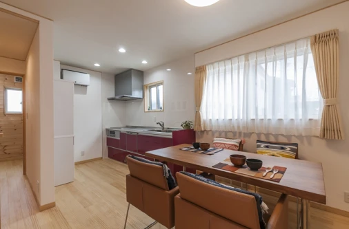
こんにちは。富山で自然素材にこだわるホンモノの家、フジ創アイノスです。 フジ創アイノスでは、住む人の健康を第一に考え、自然素材をにこだわった家づくりをしています。 弊社のお客様は、 「口コミ」 によっていらっしゃる方が多
続きを読む →
こんにちは。富山で自然素材にこだわるホンモノの家、フジ創アイノスです。 ✔電気料金を安くするための方法 電気料金は、終わりがある住宅ローンと違い一生払っていかなくてはいけない費用です。 また、今後は電気料金が上がっていく
続きを読む →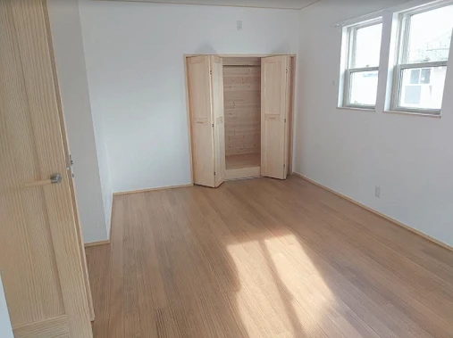
こんにちは。富山で自然素材にこだわるホンモノの家、フジ創アイノスです。 アイノスの家は、こだわりの無垢フローリングです。 柔らかい肌触りで、耐久性・保温性に優れていて、室内に自然な調湿効果が得られます。 使い込むほどに飴
続きを読む →こんにちは。富山で自然素材にこだわるホンモノの家、フジ創アイノスです。 首都直下型地震の被害想定によれば、地震火災による死者が最大で約16000人になるというデータもあります。 また現在、建物火災による死者のうち８割以上
続きを読む →
こんにちは。富山で自然素材にこだわるホンモノの家、フジ創アイノスです。 断熱性、気密性、耐震性などは、そこに住まう人々の健康や安全につながる大きな要素です。 『住』は「食」と同じか、それ以上に健康に直結していると言われて
続きを読む →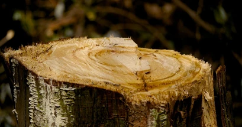
こんにちは。富山で自然素材にこだわるホンモノの家、フジ創アイノスです。 今日はひどい雪でしたね。 外出中の事故や、ヒートショックなど室内の事故にも気を付けてくださいね。 世の中にある建物の中で、「断熱の王様」と呼ばれるも
続きを読む →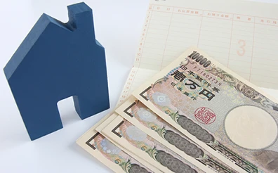
こんにちは。富山で自然素材にこだわるホンモノの家、フジ創アイノスです。 同じ金額を銀行から借りるとして、その毎月の返済額が、75,000円になるのと80,000円になるのでは、どちらの方を選びますか？ また、返済負担が高
続きを読む →こんにちは。富山で自然素材にこだわるホンモノの家、フジ創アイノスです。 住宅ローンに対する認識を正しく持つ 家を建てるとなると、誰しもが住宅ローンを利用すると思います。 認識しておかないといけないことは、 ものすごく多額
続きを読む →
こんにちは。富山で自然素材にこだわるホンモノの家、フジ創アイノスです。 家を持つということは、ただ単純に土地や建築にお金がかかるだけじゃなく、それに付随して様々な費用が必要ですし、維持していくためにも様々な費用が必要とな
続きを読む →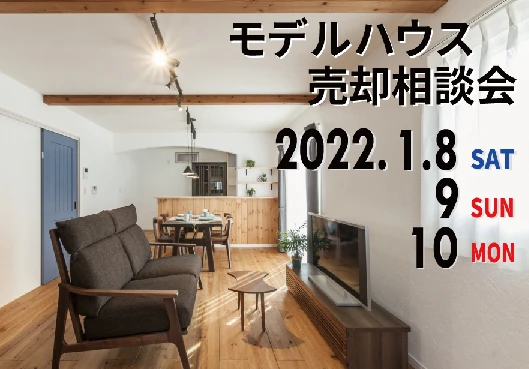
こんにちは。富山で自然素材にこだわるホンモノの家、フジ創アイノスです。 １月８日～１０日はモデルハウス売却相談会です。 こちらのモデルハウス、ママのための情報サイト「ママスキー」で紹介されています★ https://ma
続きを読む →
こんにちは。富山で自然素材にこだわるホンモノの家、フジ創アイノスです。 家づくりはその土地の気候に合わせて行わなければいけません。 富山県は日本で上位の積雪量です。 アイノスこだわりの標準仕様 雪に強い屋根の条件で大事な
続きを読む →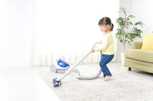
こんにちは。富山で自然素材にこだわるホンモノの家、フジ創アイノスです。 住まいは子どもの成長に大きな影響を与えます。 少し前の家は玄関に入るとすぐに階段があり、2階の子ども部屋に直行できる間取りが主流でした。 近年では、
続きを読む →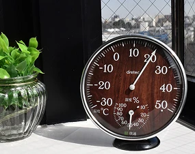
こんにちは。富山で自然素材にこだわるホンモノの家、フジ創アイノスです。 今日は空気が冷たいですね。 富山の最低気温は－２℃でした。 室内を暖かくすることは大切ですが、乾燥にも注意が必要です。 エアコンなどの暖房器具によっ
続きを読む →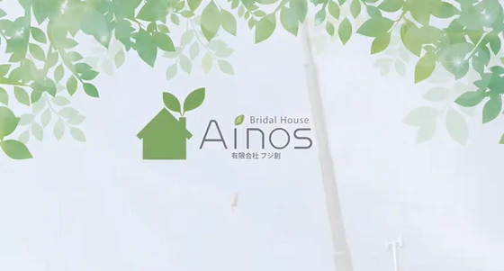
こんにちは。富山で自然素材にこだわるホンモノの家、フジ創アイノスです。 2021年も今日で最後ですね。 今年も弊社をご愛顧いただき誠にありがとうございました。 去年に引き続き、コロナで大変な年ではありましたが、オリンピッ
続きを読む →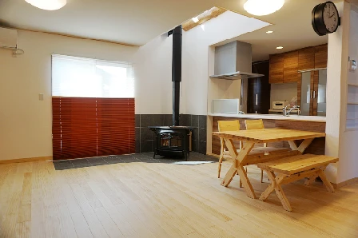
こんにちは。富山で自然素材にこだわるホンモノの家、フジ創アイノスです。 今日はひどい雨と雷でした。 冬の雨は体温を奪いますよね。明日からもっと寒くなるようですので、体調管理にお気を付けください。 今回は家の室内温度と健康
続きを読む →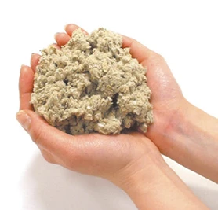
こんにちは。富山で自然素材にこだわるホンモノの家、フジ創アイノスです。 現在建築中のお家に使われている、高性能の断熱材と窓をご紹介します。 断熱材にセルロースファイバー 新聞古紙で作られた断熱材で、その断熱性能はグラスウ
続きを読む →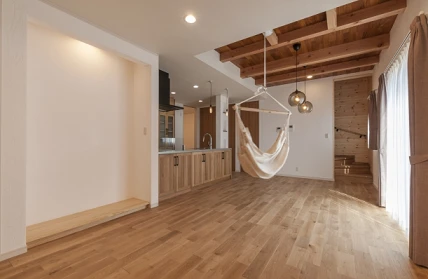
こんにちは。富山で自然素材にこだわるホンモノの家、フジ創アイノスです。 冬の寒い日は、朝起きるのがつらかったり、寝不足気味になったりしませんか？ 冬は日が短いことがホルモンに影響し、眠りが浅くだらだらと長くなってしまうそ
続きを読む →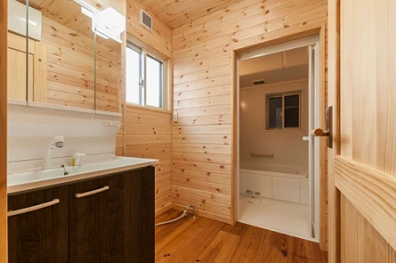
こんにちは。富山で自然素材にこだわるホンモノの家、フジ創アイノスです。 富山は本格的に雪が降りだしましたね。 去年のようなひどい大雪にはならなそうですが、お出かけの際は事故にお気を付けください。 室内の事故にも気を付けま
続きを読む →